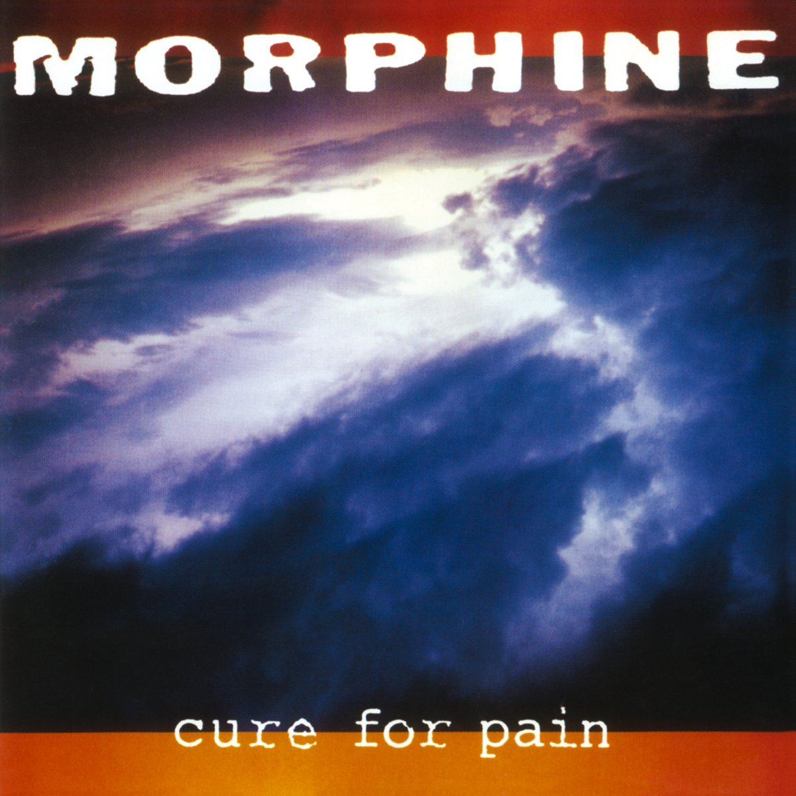

Mark Sandman collapased and died onstage while performing live with his band Morphine in Palestrina, Italy on July 3, 1999.
Sandman was known for his deep, distinctive voice and innovative approach to music, particularly his use of a two-string slide bass, which became a signature element of Morphine’s sound. The band’s music was a unique blend of rock, jazz, and blues, often described as “low rock” due to its deep, bass-heavy sound and dark, atmospheric vibe that still sends chills today.
This is the last interview he did two days before his death
Morphine
Sandman was part of several bands, but none as successful as Morphine, which formed in Cambridge, MA.
The band used an idiosyncratic set of instruments and combined blues and jazz elements with more traditional rock arrangements, which gave it an unusual and original sound. The instruments mainly consisted of baritone saxophone, two-string bass (played by Sandman), and drums. Sandman sang distinctively in a "deep, laid-back croon", and his songwriting featured a prominent beat influence. The band themselves coined the label "low rock" to describe their music, which involved "a minimalist, low-end sound that could have easily become a gimmick: a 'power trio' not built around the sound of an electric guitar. Instead, Morphine expanded its offbeat vocabulary on each album.

I hightly recommend purchasing the album Cure for Pain
Buy it on Amazon